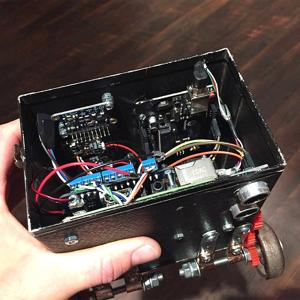
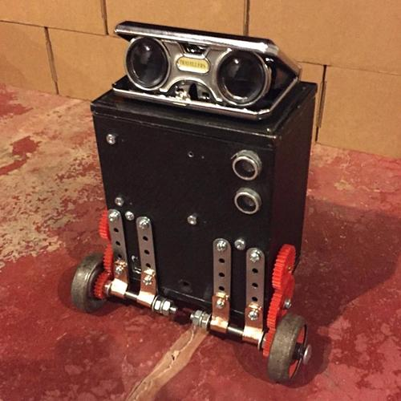

After playing a lot of video games and watching a lot of TV shows and movies about robots and A.I., I was inspired to make my own robot. But I wanted to give it a little style, so I decided to use modern technology for the guts but use authentic vintage components for the outside parts like the body and wheels.
I already had most of the guts like the Raspberry Pi (2B), motors, sensors, and batteries, and only had to buy a couple sensors… this stuff was all leftover from an improved rover I was going to build but never did. As for the body parts, I took a trip to the Antique Mall and found all kinds of cool stuff! I found an old camera for the body, a couple cool-looking gauges (just for looks), antique roller skates for the wheels, and some classic binoculars used for the theater for the ‘eyes.’

The last robot I built was designed so that it had to be controlled by a person, not unlike a remote control car. But I wanted this robot to be as autonomous as possible so I included a range sensor. This made it so that when it came up against a wall or obstacle it would stop, turn around, and keep going all on its own.
My original plan was to give it a speaker as well so that it would say random factoids along with a call for help if it ever fell over. (The sensors I installed also included an accelerometer, a pressure/temperature sensor, and compass.) Unfortunately, I never got the chance to install the speaker.

The robot was rechargeable, however, and the entire power system fit very nicely into the bottom section of the body. Despite having two separate 5V power systems that included 3.7V rechargeable batteries and 5V power boosters, the Raspberry Pi and Arduino just sucked out way too much power – which turned out to be the main downfall of the robot causing me to prematurely abandon the project. I ended up getting a new, better battery module but it turned out to be too big and wouldn’t fit properly.
This, along with a few other small things I didn’t like about the bot, made me call this project ‘finished.’ I designed it, I built it, I tested it – and it worked for a short period of time – but it didn’t quite work the way I wanted it to. The amount of redesigning and rebuilding wasn’t justifiable to me, BUT I learned a ton and will make the next one even better...